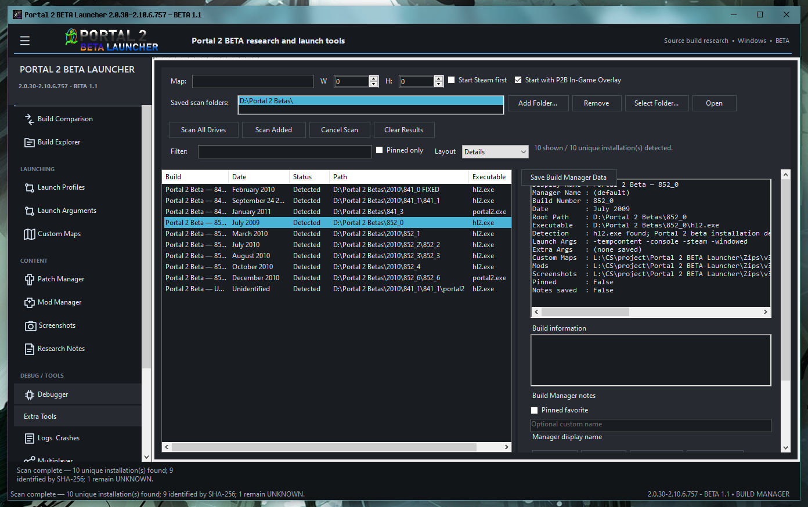
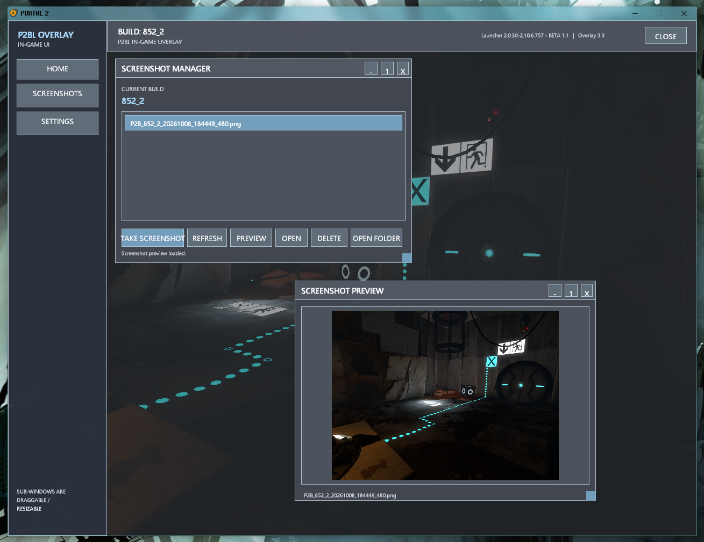

Current release
Portal 2 BETA Launcher
2.0.30-2.10.6.757 — BETA 1.1
A tested R-2 beta focused on build discovery and launching, download and hash identification, fix installation, first-party tools, and the custom in-game overlay.
Download file: P2BL_v2.0.30-B1.1.zip
Features in BETA 1.1
Build discovery & management
- Scan for Portal 2 beta builds and organize discovered installations in the Build Manager.
- View build details, paths, executable information, and launch options.
- Compare builds and access build-specific launcher tools.
Downloading & identification
- Check the hosted download database for direct archive links.
- Use backup/Gofile links when a hosted download entry is unavailable.
- Stop an active download from the download interface.
- Use remote BHT data for SHA-256 based build identification and file verification.
- Display verification results per file when hash data is available.
Fixes & archive handling
- Install supported bundled No-Steam fixes.
- Back up existing files before replacing them with fix files.
- Use 7-Zip for supported archive formats when available.
- Keep downloaded archives in the launcher's saved-data download folder and clean them up after successful install/extraction.
Extra Tools
- Scan the root-level
1st-Party-Toolsdirectory for tool executables. - List and launch detected first-party utilities from the Extra Tools page.
In-game overlay & screenshots
- Custom C++ Direct3D 9 overlay rendered inside the game.
Shift + Ztoggles the overlay.Shift + 9captures a screenshot.- Movable and resizable sub-windows, including Screenshot Manager and Screenshot Preview.
- Capture game input while the overlay is open.
Screenshots
These screenshots are from P2BL BETA 1.1. The overlay screenshot shows the UI while a Portal 2 beta build identified as 852_2 is running.


Release documents
Plain-text release documents are included below for reading without Markdown support.
Requirements & licensing
- Windows x64.
- A compatible .NET 8 runtime.
- 7-Zip components are used for full support of supported ZIP/7z archive operations; if they are unavailable, extraction support may be limited.
Review the P2BL EULA and third-party notices. Portal 2 BETA Launcher is an independent fan/research project and is not affiliated with, sponsored by, or endorsed by Valve Corporation.